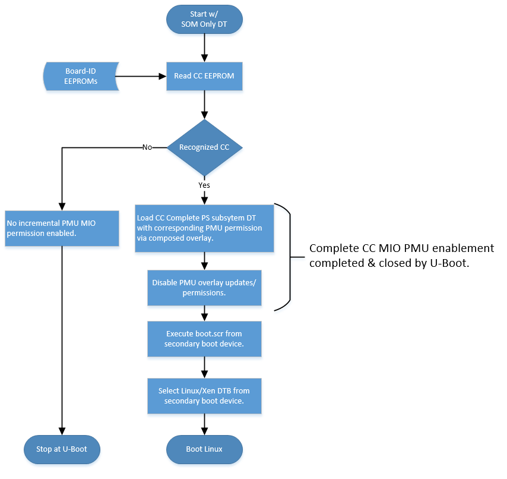
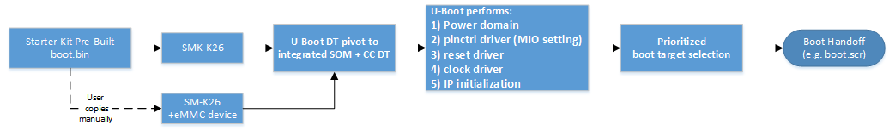
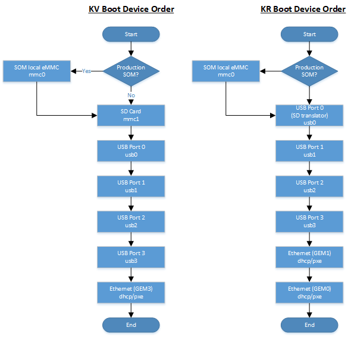

Boot Firmware - U-Boot Handoff¶
Introduction¶
In Kria Starter Kits pre-built firmware, U-Boot provides the functionality for the hand-off between the primary boot device (QSPI) and the secondary boot device (SD card default, others available). U-Boot will automatically identify the carrier card (CC) on which it is running, it then enables a full SOM + CC device tree, enables the CC peripherals via the PMU configuration object overlay APIs, and then searches a pre-defined peripheral device list for Linux boot artifacts, and then boots Linux with those artifacts.
The CC incremental PS subsystem peripherals using the PMU configuration overlay functionality described here. The PMU overlay will enable permissions for the incremental devices not included in the SOM only boot configuration defined by FSBL. U-Boot will drive the PMU configuration overlay APIs dynamically via the power domain (PD) driver when it loads the integrated device tree (DT) for KV260 or KR260. U-Boot locks the PMU configuration overlay function after it has finished loading its EEPROM identified DT. The overall flow is outlined in this flow-chart below.

Xilinx also provides customers with “flat” KV260 and KR260 BSPs that contains a simpler U-Boot configuration without dynamic CC selection and peripheral enablement. However, U-Boot source code does have support for dynamic initialization of peripherals for users who needs more sophisticated setups.
U-Boot support for Kria SOM Variants¶
Starter Kit SOM & Production SOM¶
U-Boot for Kria officially supports the Kria Starter Kits. The Starter Kit SOM and Production SOM are variants of the same hardware design. The Starter Kit SOM (designated by SMK-K26) is a reduced functionality version of Production SOM (designated by SM-K26) in that the eMMC non-volatile memory device is NOT populated in the Starter Kit configuration. The power-on “base” HW configuration (Starter Kit SOM) used by the pre-built boot firmware shall be the most reduced set of base SOM functionality. Then at the U-Boot, the platform pivots to either an integrated Starter Kit SOM + CC or a Production SOM + CC.

Prioritized Boot Order¶
Prior to 21.2, U-Boot will search for both the SD card and eMMC secondary boot devices; if both are detected it will provide a menu interface to you to select the desired Linux boot target.
From 22.1 onwards, there is no U-Boot boot menu during the boot process for SOM. The Xilinx pre-built BOOT.BIN implements a fixed device boot selection as defined by the CC identified. See the following boot device selection order for the KV and KR carrier cards. If a Production SOM is identified by its board-ID EEPROM then U-Boot first query the SOM local eMMC (mmc0) device for boot, before falling to the normal Starter Kit CC boot order.

boot.scr - Linux DT Decoupling & DT Selection¶
U-Boot uses boot.scr to help booting Linux with different device trees (DTs) provided in SD image.
Kria SOM has decoupled the device tree (DT) used by U-Boot firmware from the one selected and passed to Linux. This is to allow the BootFW (BOOT.BIN) and Linux image (SD card image) to have decoupled life-cycles. Note that DT for U-Boot is integrated into BOOT.BIN, while DTs for Linux are stored in the SD card boot partition.
The U-Boot boot script (boot.scr) has three functions:
Select correct Linux DT from pre-built SOM + CC DTs in the Linux SD card boot partition.
Define Linux boot argument (bootargs) based on CC identified
Lock the PMU configuration object functionality to prevent enabling of any new power domain
The pre-built U-Boot functionality provide U-Boot environment variables for boot.scr to use to drive the selection of the Linux DT. The following variables are used:
| env variable | Example | Description |
|---|---|---|
| board_name | SMK-K26-XCL2G | SOM board product name. Differentiates Starter vs. Production SOMs |
| board_rev | 1 | SOM board revision. |
| card1_name | SCK-KV-G | Carrier card product name. |
| card1_rev | 1 | Carrier card revision. |
An example boot.scr source code can be found below, it needs to be compiled by mkimage:
################
fitimage_name=image.ub
kernel_name=Image
ramdisk_name=ramdisk.cpio.gz.u-boot
rootfs_name=rootfs.cpio.gz.u-boot
# Close pmufw node so that linux can't send small fragments to pmufw
zynqmp pmufw node close
# Starter Kit default boot args
setenv bootargs 'earlycon console=ttyPS1,115200 clk_ignore_unused init_fatal_sh=1 cma=900M ';
#Set boot parameters based on CC type
if test "${card1_name}" = "SCK-KV-G"; then
setenv card_name sck-kv-g && setenv bootargs ext4=/dev/mmcblk1p2:/rootfs $bootargs;
elif test "${card1_name}" = "SCK-KR-G"; then
setenv card_name sck-kr-g && setenv bootargs ext4=/dev/sda2:/rootfs $bootargs;
else #Assume Kria USB secondary boot device
setenv card_name unknown && setenv bootargs ext4=/dev/sda2:/rootfs $bootargs;
fi
#Set DT selection
if test "${card1_name}" = "SCK-KV-G"; then
if test "${card1_rev}" = "Z" || test "${card1_rev}" = "A"; then
#revA dtb also supports revZ boards
dtb_name=SMK-zynqmp-${card_name}-revA
elif test "${card1_rev}" = "B" || test "${card1_rev}" = "1"; then
#revB dtb also supports rev1 boards
dtb_name=SMK-zynqmp-${card_name}-revB
fi
elif test "${card1_name}" = "SCK-KR-G"; then
if test "${card1_rev}" = "B" || test "${card1_rev}" = "1"; then
#revB dtb also supports rev1 dtb
dtb_name=SMK-zynqmp-${card_name}-revB
elif test "${card1_rev}" = "A"; then
dtb_name=SMK-zynqmp-${card_name}-revA
fi
else
dtb_name=system
fi
for boot_target in ${boot_targets};
do
echo "Trying to load boot images from ${boot_target}"
if test "${boot_target}" = "mmc0" || test "${boot_target}" = "mmc1" || test "${boot_target}" = "usb0" || test "${boot_target}" = "usb1"; then
if test -e ${devtype} ${devnum}:${distro_bootpart} /${fitimage_name}; then
fatload ${devtype} ${devnum}:${distro_bootpart} 0x10000000 ${fitimage_name};
bootm 0x10000000;
fi
if test -e ${devtype} ${devnum}:${distro_bootpart} /${kernel_name}; then
fatload ${devtype} ${devnum}:${distro_bootpart} 0x00200000 ${kernel_name};
fi
if test -e ${devtype} ${devnum}:${distro_bootpart} /${dtb_name}.dtb; then
fatload ${devtype} ${devnum}:${distro_bootpart} 0x00100000 ${dtb_name}.dtb;
else
echo "Expected ${dtb_name} Not Found in FAT Partition, Booting with SOM only DTB"
fi
if test -e ${devtype} ${devnum}:${distro_bootpart} /${ramdisk_name} && test "${skip_tinyramdisk}" != "yes"; then
fatload ${devtype} ${devnum}:${distro_bootpart} 0x04000000 ${ramdisk_name};
booti 0x00200000 0x04000000 0x00100000
fi
if test -e ${devtype} ${devnum}:${distro_bootpart} /${rootfs_name} && test "${skip_ramdisk}" != "yes"; then
fatload ${devtype} ${devnum}:${distro_bootpart} 0x04000000 ${rootfs_name};
booti 0x00200000 0x04000000 0x00100000
fi
booti 0x00200000 - 0x00100000
fi
done
The boot.scr can be found in the SD card after programming a .wic image, or it can be found in PetaLinux project (after petalinux-create command) in <petalinux_project>/pre-built/linux/images/boot.scr. the .scr file has been compiled, therefore there will be some binaries prior to the texted source code.
Compilation Procedure and Source Code¶
U-Boot is compiled with Yocto, and its recipe can be found here. PetaLinux documentation contains information on U-Boot generation as well.
The source code for U-Boot is on Xilinx github site as well.
boot.scr is compiled using mkimage, and more information can be found here
License¶
Licensed under the Apache License, Version 2.0 (the “License”); you may not use this file except in compliance with the License.
You may obtain a copy of the License at http://www.apache.org/licenses/LICENSE-2.0
Unless required by applicable law or agreed to in writing, software distributed under the License is distributed on an “AS IS” BASIS, WITHOUT WARRANTIES OR CONDITIONS OF ANY KIND, either express or implied. See the License for the specific language governing permissions and limitations under the License.
Copyright© 2021 Xilinx